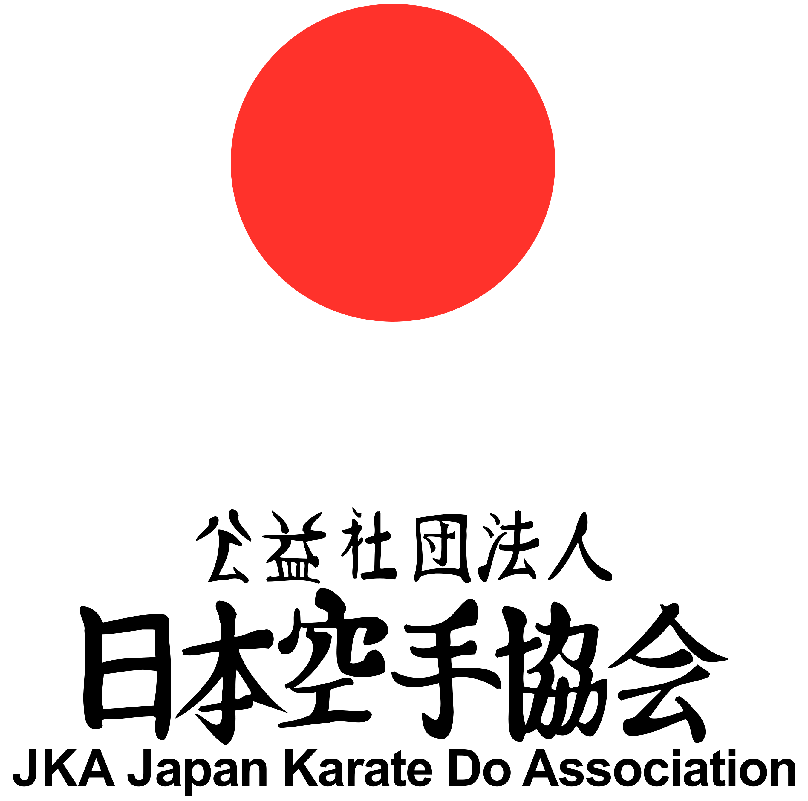
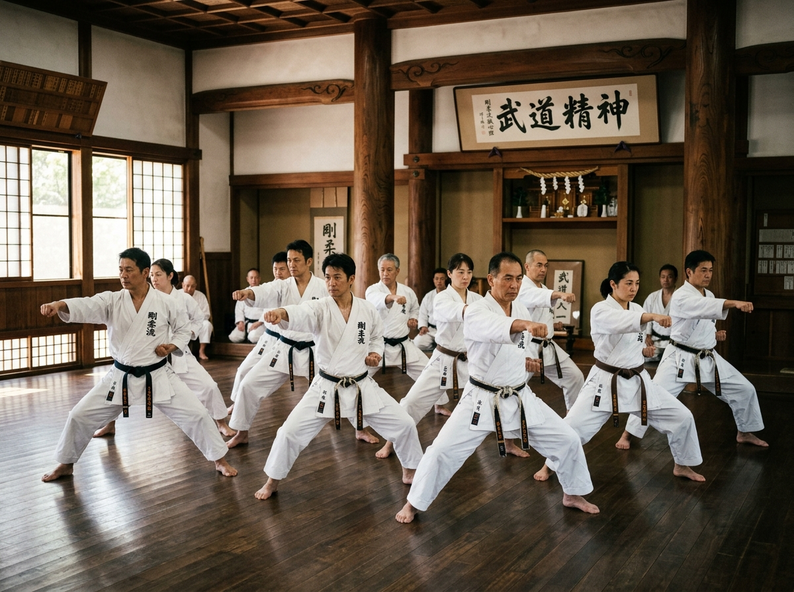
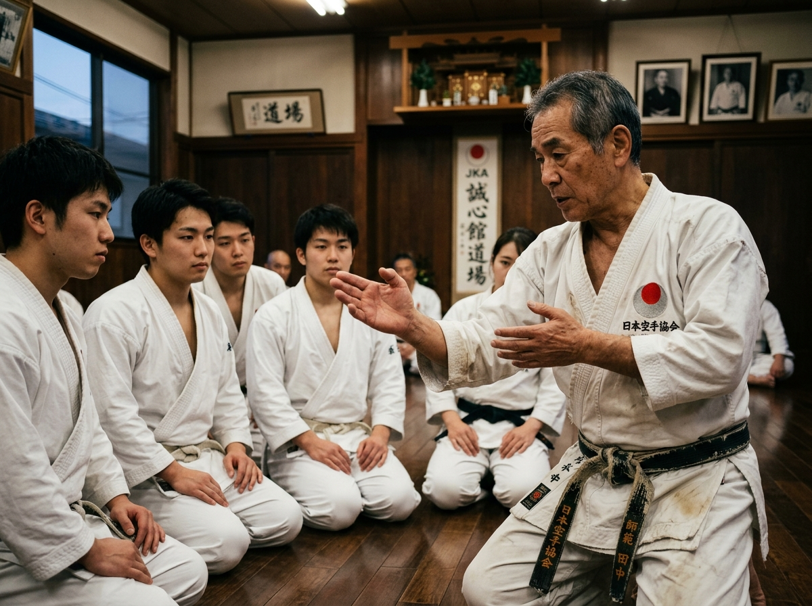
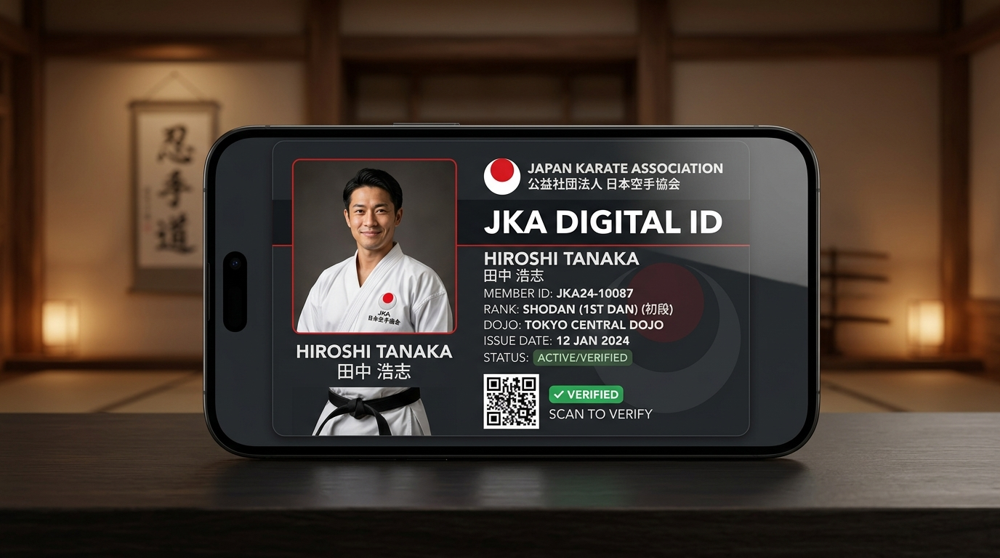

Digital modernization and unique credentials for the Japan Karate Association. Connecting karatekas worldwide under a single verified system.

The Japan Karate Association (JKA) is the keeper of karate's highest tradition. Founded in 1949 and designated a Special Nonprofit Corporation by the Japanese government, the JKA is widely recognized as the ultimate authority on traditional Shotokan Karate worldwide.
We focus on "Kihon" (basics), "Kata" (forms), and "Kumite" (sparring) not just as physical training, but as a path to master self-discipline and forge strong human character.


We are a global community of practitioners, instructors, and dojos dedicated to preserving traditional JKA Shotokan Karate at its highest level. Our network connects thousands of karatekas across continents under a unified code of honor and martial technique.
Our instructors are certified directly in Japan, bringing authentic teaching methodology, strict rank verification, and a professional platform for competition, seminars, and physical excellence.
To promote personal growth, discipline, and respect globally by offering authentic Shotokan Karate-Do under traditional JKA guidelines, forging strong minds and dedicated lives.
To unite all JKA dojos worldwide through a secure, instant digital credential system, creating a globally connected and verifiable community of practitioners.
Character (Seek perfection of character), Sincerity (Be faithful), Effort (Endeavor), Etiquette (Respect others), Self-Control (Refrain from violent behavior).
The Japan Karate Association has built a legacy of martial excellence for over seven decades. Beginning as a small collective of dedicated practitioners in post-war Japan, the association expanded globally through rigorous training, international seminars, and strict compliance with JKA standards.
Today, the JKA boasts millions of members in over 100 countries, acting as the ultimate developmental pillar for Shotokan Karate, bridging traditional values and contemporary martial practice.
A unified, verified digital credential for every JKA practitioner globally.

The JKA ID is your official digital passport. It securely verifies your rank (Kyu/Dan), dojo affiliation, and active membership status wherever you travel, train, or compete.
Every card features a secure dynamic QR code. By scanning it, instructors, organizers, and judges can verify your rank and credentials instantly in real-time. Your official ID card is compiled instantly and delivered straight to your email.
Provide your information exactly as it appears on your official credentials.